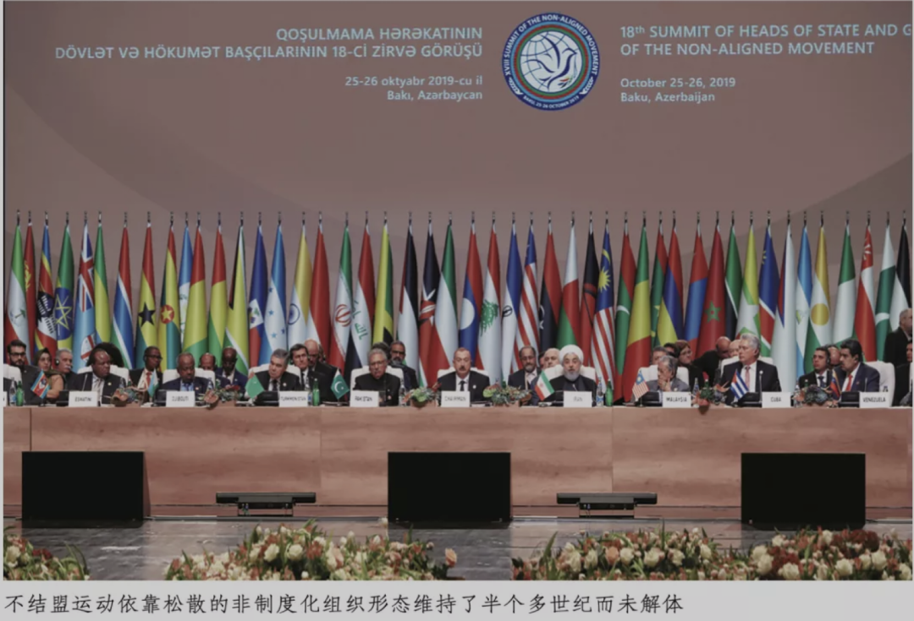
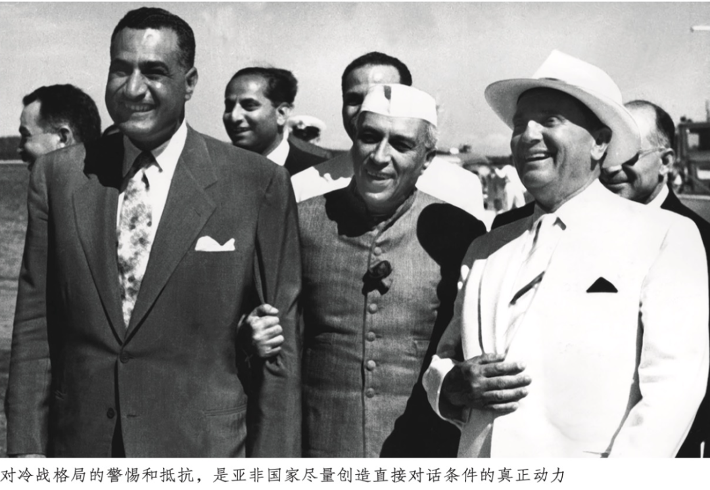
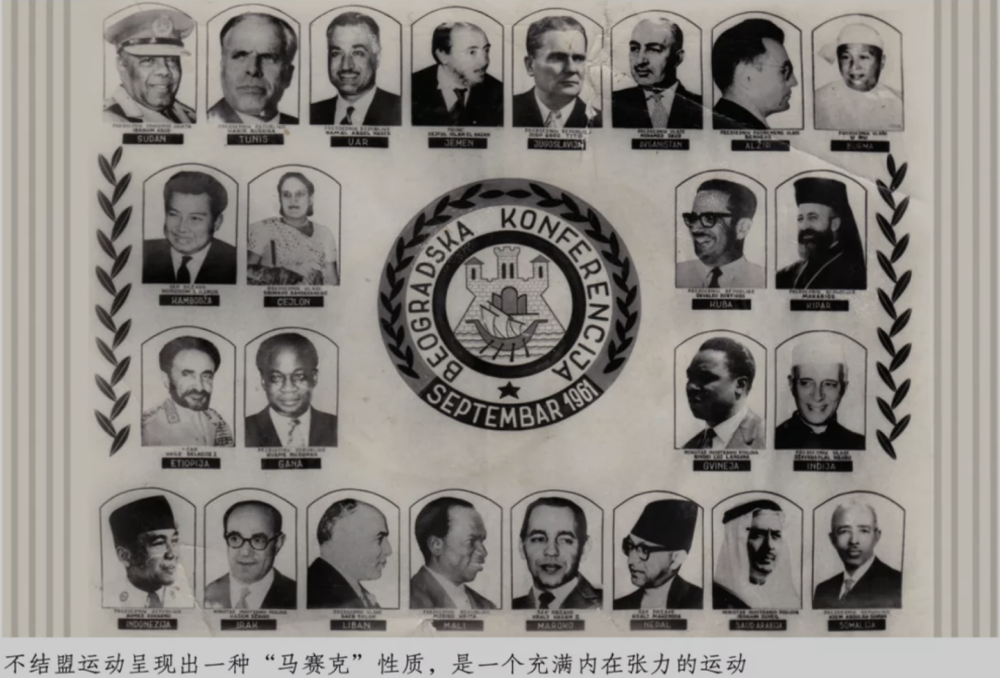
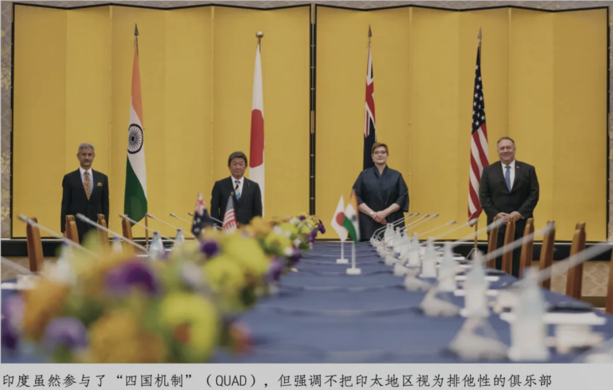

收录于合集
以下文章来源于文化纵横 ，作者孙歌
 文化纵横 .
文化纵横 .
倡导文化重建，共同思想未来，发掘不一样的深度阅读。

作品简介 ****
原标题： 多极化时代的大国责任：不结盟运动的历史启示
作者： 孙歌，北京第二外国语学院，中国社会科学院。
来源： 《文化纵横》2021年第5期。
文章导读
近年来，中美关系紧张，全球舆论场上充斥着“大国竞争”话语。面对美国咄咄逼人的打压之势，国内也有部分人陷入争霸和对立的冷战思维陷阱，有人更是断言，中国实力不断增强，取代美国的时代即将来临。
在本文作者看来，这种看法不仅错误，而且有害。通过回顾冷战中诞生的“不结盟运动”，作者呈现了一种不同于大国争霸和冷战式体制对立的世界观： 不结盟运动国家始终避免成为任何一个大国的附庸，拒绝做大国霸权争夺的马前卒，批判那种搞对抗阵营和军事同盟的观念与实践，追求建立平等、包容、多元的新国际秩序。 中国虽不是不结盟运动的成员国，但从中国式多元主义的历史逻辑，到“和平共处五项原则”，再到“人类命运共同体”，我们的对外战略和外交政策同样体现了上述观念。这是为什么，中国反复向世界宣布，希望合作共赢。
作者指出， 假如真像有些人声称的，中国取而代之成为第二个美国，重走成王败寇、霸强操控世界的美式老路，那其实是对广大第三世界的背叛，也不符合中国智慧和人类公理。结合不结盟运动的理念，来思考中国提出的合作共赢和建立人类命运共同体的倡议，可为创造新的国际格局确立重要的方向感。 中国作为一个大国，要真正承担起世界多极化的责任，和弱小国家形成平等的、结伴但不结盟的关系。这并不取决于我们是否强大，而是取决于我们是否能够拥有和坚持平等的信念，是否对世界和平有现实的理解。
本文原载《文化纵横》2021年第5期，原题为《多极化时代的大国责任：不结盟运动的历史启示》，仅代表作者观点，供诸君思考。
不结盟运动是一个很少受到关注的对象。在国际关系领域，它基本上是一个就事论事的话题。在今天这个充斥着各种结盟的世界，不结盟运动成为话题的可能性也在日益减少。理由是显而易见的：不结盟运动的理念不是当今世界的主导意识形态，甚至连这个运动的主要成员国，也未必能够真正做到“不结盟”。
即使如此，在历史不断加速的当下，“二战”之后形成并被固化的国际秩序，正在产生各种裂隙；以冷战为标志的大国支配世界的格局虽未崩溃，却随着冷战结构的转型受到了世界性的挑战。 历史并未终结，人类将何去何从？在这个严峻的拷问面前，主导世界思潮的西方思想界并不能给出有效的回答。正是在这样的历史时刻，我们需要回顾“二战”之后的历史，开掘被漠视、被遮蔽的那些侧面，创造另一种认识世界的思维方式。
01
何以关注不结盟运动
我并没有正面研究过不结盟运动。对它的了解其实仅仅是我研究日本历史学家上原专禄的副产品。上原是一位特立独行的历史学家，在日本亦步亦趋地加入美国阵营的20世纪50~60年代，他却把视线投向西方阵营以外的广大区域，试图摆脱日本社会事大主义的集体无意识，创造新的世界史叙述。在上原大幅援引的不结盟运动的资料里，我对这个运动的理念有了初步的了解；对于上原为对抗西方霸权和日本战后主流政治而有意忽略的另一些方面，我在能够找到的文献基础上进行了自行补充，于是，我获得了一个关于这个运动的结构性想象。当然，这个想象是粗糙的、不准确的，然而它却让我难以释怀。借助这些二手资料，本文虽然无法对不结盟运动本身进行正面研究，但有可能提出一个初步的课题意识： 在20世纪后半叶，随着广大殖民地国家的独立，世界史已经涌现出一些新的历史动能， 尽管冷战格局和大国政治使得这些历史能量难以成为主流，也难以得到准确评估，然而它们却一直存在，曲折地坚持着，断续地发展着，在不协和音中扭结成一股股力量，为将来的世界史积累着结构性的要素。 不结盟运动，就是这些历史动能中的一个持续低音，它并不显眼，却为人类世界勾勒出了不可或缺的基调。

不结盟运动是一个“违反常识”的运动。 它起始于1961年，由南斯拉夫、埃及（当时是阿拉伯联合共和国）、印度尼西亚、印度等国发起。发起时只有25个成员国，没有章程，没有常设组织机构，也没有确定的主导国家，甚至没有定期开会的制度。但是持续到21世纪之后，虽然松散依旧，不结盟运动却发展成为拥有120个成员国、17个观察员国和10个观察员组织的国际网络。从我有限的调查结果看，截至2016年，它召开了17次大会。姑且不论不结盟运动具体讨论了什么问题、解决了什么问题，仅仅从它依靠松散的非制度化组织形态维持了半个多世纪而未解体的经历看，就足以颠覆我们关于国际关系的常识性想象。 我们太习惯于胜者王侯败者寇的思维，太习惯于追随强者制定游戏规则的惯例，以至于对不结盟运动创造的这个奇迹视而不见。 追问这个奇迹对今天的意义，难道不是一个有价值的思想课题吗？
简单地说，至少有三个事件构成不结盟运动的前史和思想起源：一是1954年中印正式签署发表的和平共处五项原则，二是1955年的万隆会议，三是1956年在南斯拉夫的布里俄尼岛，由南斯拉夫、埃及和印度三国领导人共同发表的反对“一边倒”的声明。
1954年中印正式签署《关于中国西藏地方和印度之间的通商和交通协定》，确定了前一年由中国提出的和平共处五项原则。其后，周恩来总理先后访问印度和缅甸，与两国分别签署了同样主旨的协定。同年，尼赫鲁总理回访中国，发表了热情洋溢的讲演，阐明中印两国可以超越不同体制的差异，为谋求两国人民的幸福而维护友好往来关系。中国提出并得到印度认可的这五项原则，意义并不仅仅在于解决当时已经开始出现的边界问题，更提示了作为两个刚刚摆脱殖民地和半殖民地状态的大国，以和平方式解决边境争端的可能性。 在冷战升级、美苏争夺世界霸权的情势下，由两个人口众多的后发国家联合提出的这个新的国际关系设想，把避免战争、维护世界和平放在了第一位，与冷战思维形成了鲜明的对照，这是划时代的大事件。
1955年万隆会议召开，宣布了亚非国家维护国家独立和主权完整的意志。万隆会议提出了“十项原则”，是在五项原则基础上的扩展。周恩来总理在万隆会议期间以真正的外交智慧化解了冲突，克服了国家体制差异带来的对立。中国还提出，希望亚非会议今后也能继续召开。
1955年是不平凡的一年。这一年里，“二战”后获得独立的各国并没有在铁幕两侧对立，而是纷纷跨越超级大国强调的政治体制对立，缔结了不同体制国家之间的外交关系。 当然，1953年斯大林逝世，对这个局势的形成或许有某种推动关系，中国在其中发挥的积极作用也是不可否认的。不过从根本上来说， 冷战不仅以社会制度的差别为由，人为地制造出绝对化的意识形态对立，而且大力推动两大阵营各自的军事结盟。对这一战后格局的警惕和抵抗，是亚非国家避开两大阵营的对立，尽量创造直接对话条件的真正动力。
1956年，南斯拉夫总统铁托、埃及总统纳赛尔、印度总理尼赫鲁，在南斯拉夫布里俄尼岛进行了政治会谈。这个会谈强调了继承万隆会议精神的宗旨，特别提出了“反对一边倒”的声明。当时的南斯拉夫正在谋求从苏联的支配下独立出来，而埃及与印度正面临英法和美国的强势威胁。三国首脑在为维护主权而不得不准备武装对抗的同时，表现出争取世界和平与独立自主的意志，这是一个极具分寸感的政治姿态。布里俄尼声明发表后没过几个月，埃及爆发了由苏伊士运河国有化引发的中东战争。以色列和英、法军队对埃及的入侵，引发了亚非国家的协调行动，11月，联合国二十一个亚非国家代表联合致信秘书长，要求敦促以色列撤出加沙。

不结盟运动在1961年兴起，正是以50年代亚非国家独立运动和亚非及东欧国家逐渐形成的连带为基础的。 关注不结盟运动，也正是关注冷战对峙中后发国家群逐渐形成自我意识、登上历史舞台的过程。
02
重新思考不结盟运动的理念
不结盟运动并非一般性地反对结盟。在特定的历史条件下，面对老牌帝国主义国家和战后试图独揽世界霸权的美国的威胁与干涉，刚刚获得独立的弱小国家很难依靠一己之力克服内外危机。事实上，即使是政治强人纳赛尔和尼赫鲁，也在危机来临之际不能不求助于苏联或美国；但作为不结盟运动的发起人，他们仍然贯彻了“反对一边倒”的立场，拒不加入冷战任何一方。
纳赛尔在布里俄尼会谈时曾说：“帝国主义采用同盟和协定的形式。它们想要我们做它们的附庸，希望只要它们发出命令，我们就做出呼应。这样的事情绝对不会发生。” 这段话集中道出了不结盟运动的核心理念：不做美、苏任何一方的附庸，不做帝国主义的马前卒，制止新殖民主义与帝国主义对世界的宰制。因此，“不结盟运动”拒绝的“结盟”，其实并不是一般意义上的联合，而是“从属”。 不结盟运动对成员国的基本要求是：
1.奉行以和平共处和不结盟为基础的独立的外交政策；
2.支持民族独立运动；尊重各国领土主权，不干涉、不介入别国的内部事务；
3.不参加大国军事同盟；不与大国缔结双边军事协定；
4.反对种族歧视与种族隔离；
5.不向外国提供军事基地。
在1961年不结盟国家和政府首脑会议第一次会议上，与其他几位发起国首脑一道，印尼总统苏加诺做了一个长篇讲演，提出了一些耐人寻味的问题：“我们并不是作为某个阵营的成员集合在这里的。因为实行不结盟政策的各国，不是形成阵营的力量。我们厌恶阵营这个观念本身。我们聚集在这里，是因为我们保持这样的见解：特别是在以强权政治和军备竞争为基础的情况下，在当今的核武器时代里，那些制造阵营的势力，只能导致毁灭人类的战争。不结盟并不是反对某个国家、反对某个阵营、反对社会体制的某个类型。所谓不结盟政策，对我们任何人而言，都是积极贡献于维护和平、缓和国际紧张局势的最佳选择。我们共同确信这一点。”
有个实例很好地诠释了苏加诺的说法。在1960年召开的第十五届联合国大会上，由南斯拉夫、埃及（阿拉伯联合共和国）、印度尼西亚、加纳、印度五国元首共同提交了一个提案，建议美、苏首脑重新开始相互接触，以缓和国际紧张局势；但该提案在投票表决阶段因遭到阻挠被迫撤回。不结盟运动的不站边立场，从他们努力促成美苏对话的姿态中可见一斑。苏加诺强调说，不结盟运动不是两极化世界的“缓冲地带”，也不是冷战对峙格局中的“中立主义”。 所谓不结盟主义，是对于独立、永久和平、社会正义以及真正的自由这些远大目标的能动性追求，它体现的是人类社会的良心。
不结盟运动的理念并不仅仅是一个伦理目标。它首先是现实性的政治方案。苏加诺在讲演中特别指出：人们认为两种体制的对立是这个世界的基本矛盾，但这种判断并不符合事实；真正的矛盾是谋求自由和正义的新兴势力与占据统治地位的旧势力之间的抗争。苏加诺在半个多世纪以前就已经 戳穿了冷战意识形态道貌岸然的假象，揭示了铁幕的核心不在于体制之争，而在于世界统治权之争。 在这个过程中，以大国为中心的结盟，特别是军事结盟，是维护已经形成的世界支配格局的重要手段。
苏加诺认为，一个国家采用什么样的体制，应该由该国人民自己决定。当然，在一国决定建立何种体制的时候，往往会引发内部冲突。即使这种冲突激化，只要没有外部势力介入，最终一定能够达到某种综合性的共识状态。他结合印度尼西亚在独立过程中遇到的问题，尖锐地指出：在我们就体制问题产生内部抗争时，假如外部势力施加压力，内部的动乱、骚动就很容易转化为敌对、暴动乃至战争。因此他直接对霸权国家发出呼吁：请不要干涉我们的事情！
苏加诺对国际关系的基本判断是：包括社会主义诸国在内的各种新兴势力日益顽强地登上世界舞台；与此相对，霸权势力仍然极力维护旧有的力学平衡关系，希望继续进行民族对民族、人对人的剥削。不结盟运动以新兴势力为友，绝不是偶然的。新兴国家正在创造新的国际秩序，以期所有民族都能独立自主地营造国民生活。苏加诺说，在这种新的平衡关系中，对抗性的阵营没有存在余地；军事同盟这一观念将会变得不合时宜，那时，我们将可以讨论永久和平。
无论是在1961年还是在现在，苏加诺的这个论断都不能抽象地视为乌托邦式的预言。 假如我们不把冷战宣扬的体制对立视为理所当然的国际秩序基础，那么，不结盟运动的现实功能就会呈现。 当苏加诺戳破西方世界“体制优越性”的意识形态谎言，指出冷战的真面目不是以西方式民主战胜独裁专制的时候，他指出了一个其后花费大半个世纪才呈现出来的历史事实：冷战西方一侧的主导国家，是通过两次世界大战坐稳了统治世界、剥削世界交椅的新老帝国主义势力；它们认为世界已经瓜分完毕，不可以有任何改变；包括社会主义国家在内的广大新兴国家，假如不在它们的指挥棒下行事，就将受到它们的残酷打击。所谓“地区冲突”的背后，何以一定有这些帝国主义国家的操控，在今天虽已不言自明。但不结盟运动在大半个世纪前就明确地超越体制差异，把瓦解“旧的平衡关系”作为自己的斗争目标，仍可以说具有超前的眼光，它体现出第三世界政治家的真知灼见。 不结盟运动的理念包含了一些迄今为止我们在理解国际关系（无论是政治、经济还是其他外交关系）时不常见的陌生思维方式，它不仅直捣国际关系中的帝国主义霸权问题，而且在初始阶段就提出了明确的奋斗目标——建立一种让对抗性阵营没有存在余地、让军事结盟变得不合时宜的新的国际秩序，并且在新的动态平衡关系中实现人类的永久和平。
但不结盟运动的领导人同样深知，现实绝对不是玫瑰色的。不结盟运动的理念，其核心是关于斗争的概念。苏加诺明确地说明，以新的平衡取代旧有的力学关系，不可能不发生激烈的对抗。为了反对新的殖民与新的帝国主义，不结盟运动参与国必然要准备随时以武装手段进行抗争。在这个阶段，不是所有国家都有条件和能力实行不结盟政策；但不结盟政策的上述基本理念，却是支持抗争的基础。 苏加诺强调说，不结盟运动是一个动态的过程，它象征新兴力量对抗新老帝国主义的历史趋势。客观把握现实趋势，需要理念上的转换。不结盟运动尽管不可能立刻改变世界格局，却为历史提供了新的认识标准，为理念的转换提供了一种可能性条件。
借用上原专禄的说法，不结盟运动呈现出一种“马赛克”性质，这是一个充满内在张力的运动。印度总理尼赫鲁后来回忆说：参加这次会议的有一个皇帝、两个国王、一个大主教、众多总统，还有几位首相。为了产生最终得到全体成员同意的宣言，不能不就分歧进行细致的讨论。在第一届大会上，与会的二十五国首脑经历了激烈的辩论，会议结束时发表的两个宣言中，比较单纯的《关于战争危机的声明与和平的呼吁》简短而明确，而《不结盟诸国国家及政府首脑的宣言》在论述中保留了明显的内在差异甚至矛盾。但是，会议表决时，这两个决议都获得了全体一致通过。

尽管苏加诺在理念上为这个运动提出了明确的目标，但现实中各国的实践与它未必一致。作为不结盟运动的重要发起人，纳赛尔总统虽然在抗击美国对阿拉伯地区的压力方面表现杰出，但在处理阿拉伯国家内部事务时却表现出他自己所指责的“大国中心主义”。这导致埃及和叙利亚为了共同抵制来自美国的压力而结成的阿拉伯联合共和国，由于无法处理内部的宗教事务以及权力纷争，仅仅存在了三年就在事实上解体。从50年代开始，印度为了解决边境冲突和经济建设问题，采取了与苏联和美国同时往来的策略。从20年代到60年代，尼赫鲁一直谋求在与美国建立合作关系的同时，也与苏联签订经济协定。这种在必要时“两边倒”的策略，固然帮助尼赫鲁避免了“一边倒”的困境，保留了自主性空间，但无法达成类似纳赛尔的强硬姿态，印度知识分子把这种姿态解释成和平外交。 耐人寻味的是，尼赫鲁的外交方式似乎遗传给了当今印度领导人。 印度虽然参与了美国印太战略中的“四国机制”，但与甘当马前卒的日本不同，莫迪总理强调“印太”是地理概念而不是战略概念，强调印度不把印太地区视为排他性的俱乐部，不针对任何国家。印度政府在美国固化印太四国机制的形势下，并没有按照美国旨意行动，而是达成了中印边境冲突的和平解决，还在参加印太行动的同时公开从俄罗斯购买战机，以此向美国传递了不当马前卒的信息。
或许今天仍然没有条件完全实现不结盟运动的初衷，甚至这一初衷从一开始就不像苏加诺表达的那样清晰； 但不得不承认的是，在冷战解体、美国一家独大的时代，不结盟运动拥有的混沌却充满生命力的历史潜能，仍然具有瓦解旧的世界秩序、建立新的平衡关系的动能。
03
不结盟与合作共赢
中国并不是不结盟运动的成员国，只是1992年以观察员国的身份参与了这个运动。万隆会议时期中国采取“一边倒”的外交策略，不过中苏关系很快就发生破裂，中国由此走向独立自主的外交政策。不结盟运动兴起时，中国是社会主义阵营中的发展中国家，与不结盟运动共享同样的奋斗目标——建立一种让对抗性阵营没有存在余地、让军事结盟变得不合时宜的新的国际秩序，在新的动态平衡关系中实现人类的永久和平。
随着冷战结构的解体，资本的全球化迅速向全球扩张，表面上看，这个世界似乎在向美国“一边倒”了。但是，随着各种新兴国家参与的国际机制的建立，美国的国际霸权虽然仍在，却开始“缩水”了。

2001年，博鳌亚洲论坛正式起步。纵览二十年来的二十次年会主题，我们可以清楚地看到，从第二次年会开始，其后的五次年会均以“亚洲寻求共赢”为主旨，具体讨论不同的侧重点；晚近的年会则以“命运共同体”为主题，讨论亚洲如何共创未来。 反复呈现的关键词是“共同”“合作”“共赢”。 今年的年会主题是“世界大变局：共襄全球治理盛举 合奏一带一路强音”。二十年里，中国一贯坚持的多边、多元外交政策，在今年的年会主题设计里表现得淋漓尽致。
世界正处在大变局之中。 博鳌论坛是一个经济论坛，它避开了文化与意识形态。然而这个只讨论经济问题的国际合作组织，却仍然传递出鲜明的意识形态信息。 正如《区域全面经济合作伙伴关系协定》（RCEP）所提示的那样，区域性的合作必须以伙伴关系为前提，一家独大的时代终将结束。合作共赢，才是今天的历史逻辑。
随着“一带一路”倡议的发展，亚投行、新开发银行的出现和运作，特别是博鳌论坛象征的开放性亚洲这一历史能量的释放，“二战”后形成的国际秩序持续受到挑战。 少数不希望改变世界格局并从旧国际秩序中获益的发达国家，并不肯正视这个大变局，它们仍然沿用20世纪后半叶的老一套冷战意识形态说辞，强化所谓的体制对立，把人权、民主、言论自由等日益空洞化的概念当作打人的大棒。 与此同时，在军火商的推动下，各种名目的军事结盟和地区冲突仍然层出不穷；以美国为首的霸权国家，仍然不肯放弃对别国内政的干涉，动辄对他国指手画脚。不结盟运动起步时苏加诺斥责的帝国主义基本逻辑，在今天仍然在重复上演。
然而，历史的舞台却在悄然换场。新兴国家的国际平台日益增多，各种伙伴关系在不断缔结。即使伴随着不和谐乃至冲突，即使在新兴国家之间存在着政治体制的差异，我们仍然可以观察到， 新兴国家并未动辄使用冷战意识形态相互攻击和指责。迄今为止，以体制对立为由攻击后发国家的，仍然是少数西方霸权国家。而其中成为攻击焦点的，是在国际舞台上日益显示出重要性的中国。
和印度一样，中国的历史逻辑很难被西方社会所理解。最难以被西方理解的，恐怕是中国式多元主义。中国历史并不是玫瑰色的，但在它的动荡与血火之中，却历练出“不齐之齐”的精神遗产。当新冠肺炎疫情让世界不再对美国亦步亦趋之后，中国并没有表现出“取代美国”的意愿。 中国反复对美国和世界宣布，中国希望合作共赢。这并非由于当下中国并不具备称霸的实力，更重要的原因是，中国思想传统里一直潜在的多元化与多极化倾向，仍在今天中国的世界感觉里发挥着作用。
世界上通行的“多极化”概念，其实是一极之下的多极。这个“一极”，在“二战”后基本上由美国独占，无论在现实政治、经济、外交等领域，还是在思想和精神生活中，美国都处于中心位置，至今仍然拥有超出正常国家的国际霸权。 有些人认为，随着中国经济实力的增强，取代美国的时代就要来临了，这种看法是有害的。假如中国成为第二个美国，那就意味着对广大第三世界的背叛，意味着对人类公理的亵渎。 正是在这个意义上，结合不结盟运动的理念来思考中国提出的合作共赢和建立人类命运共同体的倡议，确立了非常重要的方向感。 中国作为一个大国，能不能真正承担起世界多极化的责任，能不能和弱小国家形成平等的、结伴但不结盟的关系，从而创造一种新的国际格局，并不取决于我们是否强大，而是取决于我们是否能够拥有和坚持平等的信念，是否对世界和平有现实的理解。 盲目的对抗是愚蠢的，当我们拥有清醒的目标时，对抗才能获得意义。
在20世纪50年代，上原专禄构想多元性世界史图景时，他给出了一个重要启示：在既有的以欧美为中心的世界史结构中，后发地区仅仅构成欧美的“周边地带”，并不具有自己的独立发展逻辑。在那个时代，上原把目光投向不结盟运动，并非因为这个尚未成形的运动提供了现成的模式，而是因为即使在它内部充满不和谐音，在它并不能有效践行自己理念的时候，它也已然显示了新的世界史眼光。 不结盟运动并非意在对抗欧美，它尝试着走出一条多元化的人类发展道路。 时隔大半个世纪，今天的世界看上去仍然霸权当道，当年的弱小国家各自经历了内外变化，执政者也不再是当年那一代倡导不结盟的政治家；然而不结盟的理念却宛如一条潜流，依然活在历史的水脉当中。 在所谓的新冷战时期，如果我们转换强国操控世界的思路，那么，新的世界史图谱将呈现在眼前。换一种眼光看世界，就会注意到那些被我们忽略的盲点，也才会理解，何以“合作共赢”并非国际关系中的策略，而是重要的第三世界原理。
排版 | 柴昕彤
本文章来源于《文化纵横》
文章观点不代表本平台观点